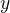

Logic and Proof
13 Relations
In Chapter 7 we discussed the notion of a relation symbol in first-order logic, and in Chapter 10 we saw how to interpret such a symbol in a model. In mathematics, we are generally interested in different sorts of relationships between mathematical objects, and so the notion of a relation is ubiquitous. In this chapter, we will consider some common kinds of relations.
In some axiomatic foundations, the notion of a relation is taken to be
primitive, but in axiomatic set theory, a relation is taken to be a
set of tuples of the corresponding arity. For example, we can take a
binary relation on  to be a subset of , where
to be a subset of , where  means that
means that  . The foundational definition is generally
irrelevant to everyday mathematical practice; what is important is
simply that we can write expressions like , and that they are
true or false, depending on the values of
. The foundational definition is generally
irrelevant to everyday mathematical practice; what is important is
simply that we can write expressions like , and that they are
true or false, depending on the values of  and
and  . In
mathematics, we often use infix notation, writing instead of
.
. In
mathematics, we often use infix notation, writing instead of
.
13.1 Order Relations
We will start with a class of important binary relations in mathematics, namely, partial orders.
Definition. A binary relation  on a domain is a partial
order if it has the following three properties:
on a domain is a partial
order if it has the following three properties:
- reflexivity: , for every in
- transitivity: if
 and , then , for
every , , and
and , then , for
every , , and  in
in - antisymmetry: if and then , for every
and in .
Notice the compact way of introducing the symbol in the
statement of the definition, and the fact that is written as
an infix symbol. Notice also that even though the relation is written
with the symbol , it is the only symbol occurring in the
definition; mathematical practice favors natural language to describe
its properties.
You now know enough, however, to recognize the universal quantifiers that are present in the three clauses. In symbolic logic, we would write them as follows:
Here the variables , , and implicitly range over the domain
.
The use of the symbol is meant to be suggestive, and, indeed,
the following are all examples of partial orders:
- on the natural numbers
- on the integers
- on the rational numbers
- on the real numbers
But keep in mind that is only a symbol; it can have unexpected
interpretations as well. For example, all of the following are also
partial orders:
- on the natural numbers
- on the integers
- on the rational numbers
- on the real numbers
These are not fully representative of the class of partial orders, in that they all have an additional property:
Definition. A partial order on a domain is a total
order (also called a linear order) if it also has the following
property:
- for every and in , either or .
You can check these these are two examples of partial orders that are not total orders:
- the divides relation, , on the integers
- the subset relation, , on sets of elements of some
domain
On the integers, we also have the strict order relation,  , which is
not a partial order, since it is not reflexive. It is, rather, an
instance of a strict partial order:
, which is
not a partial order, since it is not reflexive. It is, rather, an
instance of a strict partial order:
Definition. A binary relation on a domain is a strict
partial order if it satisfies the following:
- irreflexivity:
 for every in .
for every in . - transitivity: and implies , for every ,
, and in .
A strict partial order is a strict total order (or strict linear order) if, in addition, we have the following property:
- trichotomy: , , or for
every and in .
Here, means, of course, that it is not the case that  , and is alternative notation for . To distinguish an
ordinary partial order from a strict one, an ordinary partial order is
sometimes called a weak partial order.
, and is alternative notation for . To distinguish an
ordinary partial order from a strict one, an ordinary partial order is
sometimes called a weak partial order.
Proposition. A strict partial order on is
asymmetric: for every and , implies .
Proof. Suppose and . Then, by transitivity, , contradicting irreflexivity.
On the integers, there are precise relationships between and
:  if and only if
if and only if  or , and if
and only if and
or , and if
and only if and  . This illustrates a more general
phenomenon.
. This illustrates a more general
phenomenon.
Theorem. Suppose is a partial order on a domain . Define
to mean that and . Then is a strict
partial order. Moreover, if is total, so is .
Theorem. Suppose is a strict partial order on a domain
. Define to mean or . Then is a
partial order. Moreover, if is total, so is .
We will prove the first here, and leave the second as an exercise. This proof is a nice illustration of how universal quantification, equality, and propositional reasoning are combined in a mathematical argument.
Proof. Suppose is a partial order on , and be defined
as in the statement of the theorem. Irreflexivity is immediate, since
implies , which is a contradiction.
To show transitivity, suppose and . Then we have  , , , and . By the transitivity
of , we have . To show , we only have to show
. So suppose
, , , and . By the transitivity
of , we have . To show , we only have to show
. So suppose  . then, from the hypotheses, we have and , violating asymmetry. So , as required.
. then, from the hypotheses, we have and , violating asymmetry. So , as required.
To establish the last claim in the theorem, suppose is
total, and let and be any elements of . We need to show
that , , or . If , we are done, so we can
assume . Since is total, we have or . Since , in the first case we have , and in
the second case, we have .
13.2 More on Orderings
Let be a partial order on a domain, , and let be the
associated strict order, as defined in the last section. It is
possible to show that if we go in the other direction, and define
to be the partial order associated to , then and
are the same, which is to say, for every and in ,
if and only if . So we can think of every
partial order as really being a pair, consisting of a weak partial
order and an associated strict one. In other words, we can assume that
holds if and only if and , and we can
assume holds if and only if or .
We will henceforth adopt this convention. Given a partial order
and the associated strict order , we leave it to you to show that
if and , then , and, similarly, if
and , then .
Consider the natural numbers with the less-than-or-equal relation. It
has a least element,  . We can express the fact that is the
least element in at least two ways:
. We can express the fact that is the
least element in at least two ways:
- is less than or equal to every natural number.
- There is no natural number that is less than .
In symbolic logic, we could formalize these statements as follows:
Using the existential quantifier, we could render the second statement more faithfully as follows:

Notice that this more faithful statement is equivalent to the original, using deMorgan's laws for quantifiers.
Are the two statements above equivalent? Say an element  is minimum for a partial order if it is less than or equal to any other element; this is, if it takes the place of 0 in the first statement. Say that an element is minimal for a partial order if no element is less than it; that is, if it takes the place of 0 in the second statement. Two facts are immediate.
Theorem. Any minimum element is minimal.
Proof. Suppose is minimum for . We need to show that
is minimal, that is, for every , it is not the case that  . Suppose
. Suppose  . Since is minimum, we have . From and , we have , contradicting the irreflexivity
of .
. Since is minimum, we have . From and , we have , contradicting the irreflexivity
of .
Theorem. If a partial order has a minimum element, it is
unique.
Proof. Suppose and  are both minimum. Then
and . By antisymmetry, .
are both minimum. Then
and . By antisymmetry, .
Notice that we have interpreted the second theorem as the statement
that if and are both minimum, then . Indeed,
this is exactly what we mean when we say that something is "unique."
When a partial order has a minimum element , uniqueness is what
justifies calling the minimum element. Such an is also
called the least element or the smallest element, and the terms
are generally interchangeable.
The converse to the second theorem – that is, the statement that every
minimal element is minimum – is false. As an example, consider the
nonempty subsets of the set with the subset relation. In
other words, consider the collection of sets  , , and
, , and
 , where , , and, of course, every element is a subset of itself. Then
you can check that
, where , , and, of course, every element is a subset of itself. Then
you can check that  and
and  are each minimal, but neither
is minimum. (One can also exhibit such a partial order by drawing a
diagram, with dots labeled , , , etc., and upwards edges
between elements to indicate that one is less than or equal to the
other.)
are each minimal, but neither
is minimum. (One can also exhibit such a partial order by drawing a
diagram, with dots labeled , , , etc., and upwards edges
between elements to indicate that one is less than or equal to the
other.)
Notice that the statement "a minimal element of a partial order is not
necessarily minimum" makes an "existential" assertion: it says that
there is a partial order , and an element of the domain,
such that is minimal but not minimum. For a fixed partial order
, we can express the assertion that such an exists as
follows:
The assertion that there exists a domain , and a
partial order on that domain , is more dramatic: it is a
"higher order" existential assertion. But symbolic logic provides us
with the means to make assertions like these as well, as we will see
later on.
We can consider other properties of orders. An order is said to be
dense if between any two distinct elements, there is another
element. More precisely, an order is dense if, whenever , there
is an element  satisfying and . For example, the
rational numbers are dense with the usual ordering, but not the
integers. Saying that an order is dense is another example of an
implicit use of existential quantification.
satisfying and . For example, the
rational numbers are dense with the usual ordering, but not the
integers. Saying that an order is dense is another example of an
implicit use of existential quantification.
13.3 Equivalence Relations and Equality
In ordinary mathematical language, an equivalence relation is defined as follows.
Definition. A binary relation on some domain is said to
be an equivalence relation if it is reflexive, symmetric, and
transitive. In other words, is an equivalent relation if it
satisfies these three properties:
- reflexivity: , for every in .
- symmetry: if , then , for every and
in .
- transitivity: if and , then ,
for every , , and in .
We leave it to you to think about how you could write these statements in first-order logic. (Note the similarity to the rules for a partial order.) We will also leave you with an exercise: by a careful choice of how to instantiate the quantifiers, you can actually prove the three properties above from the following two:
Try to verify this using natural deduction or Lean.
These three properties alone are not strong enough to characterize equality. You should check that the following informal examples are all instances of equivalence relations:
- the relation on days on the calendar, given by " and fall on the same day of the week"
- the relation on people currently alive on the planet, given by " and have the same age"
- the relation on people currently alive on the planet, given by " and have the same birthday"
- the relation on cities in the United States, given by " and are in the same state"
Here are two common mathematical examples:
- the relation on lines in a plane, given by " and are parallel"
- for any fixed natural number , the relation on natural
numbers, given by " is congruent to modulo
 "
"
Here, we say that is congruent to modulo if they leave the
same remainder when divided by . Soon, you will be able to prove
rigorously that this is equivalent to saying that  is divisible
by .
is divisible
by .
Consider the equivalence relation on citizens of the United States, given by " and have the same age." There are some properties that respect that equivalence. For example, suppose I tell you that John and Susan have the same age, and I also tell you that John is old enough to vote. Then you can rightly infer that Susan is old enough to vote. On the other hand, if I tell you nothing more than the facts that John and Susan have the same age and John lives in South Dakota, you cannot infer that Susan lives in South Dakota. This little example illustrates what is special about the equality relation: if two things are equal, then they have exactly the same properties.
An important related notion is that of an equivalence class. Let
be an equivalence relation on a set . For every
element in , let be the set of elements , that is, the set of elements of that are
equivalent to . We call the equivalence class of , under
the equivalence relation .
Equivalence tries to capture a "weak" notion of equality: if two elements
of are equivalent, they are not necessarily the same, but they
are "similar" in some way. Equivalence classes collect similar objects
together. If we define , the set of equivalence
classes of elements in , we get a version of the set where sets of
similar elements have been "compressed" into single elements.
This is illustrated in an exercise below.
13.4 Exercises
Suppose
is a strict partial order on a domain , and define
to mean that or .
- Show that is a partial order.
- Show that if is moreover a strict total order, then is
a total order.
(Above we proved the analogous theorem going in the other direction.)
- Show that
Suppose
is a strict partial order on a domain . (In other
words, it is transitive and asymmetric.) Suppose that is
defined so that if and only if or . We
saw in class that is a partial order on a domain ,
i.e.~it is reflexive, transitive, and antisymmetric.
Prove that for every
and in , we have iff and , using the facts above.
An ordered graph is a collection of vertices (points), along with a collection of arrows between vertices. For each pair of vertices, there is at most one arrow between them: in other words, every pair of vertices is either unconnected, or one vertex is "directed" toward the other. Note that it is possible to have an arrow from a vertex to itself.
Define a relation
on the set of vertices, such that for two
vertices and , means that there is an arrow from
pointing to .
On an arbitrary graph, is
a partial order, a strict partial
order, a total order, a strict total order, or none of the above?
If possible, give examples of graphs where fails to have
these properties.
Let be an equivalence relation on a set
. For every
element in , let be the equivalence class of : that
is, the set of elements  . Show that for every and ,
. Show that for every and ,  if
and only if .
if
and only if .
(Hints and notes:
- Remember that since you are proving an ``if and only if'' statement, there are two directions to prove.
- Since that and
 are sets, means that for
every element , is in if and only if is in
.
are sets, means that for
every element , is in if and only if is in
. - By definition, an element is in if and only if . In particular, is in .)
- Let the relation on the natural numbers be defined as follows:
if
 is even, then , and if is odd, then . Furthermore,
for every , . Show that is an equivalence relation. What
is the equivalence class of the number 5? Describe the set of equivalence
classes .
is even, then , and if is odd, then . Furthermore,
for every , . Show that is an equivalence relation. What
is the equivalence class of the number 5? Describe the set of equivalence
classes . - Show that the relation on lines in the plane, given by " and are parallel," is an equivalence relation. What is the equivalence class of the x-axis? Describe the set of equivalence classes .
A binary relation
on a domain is said to be a preorder it is is reflexive and
transitive. This is weaker than saying it is a partial order; we have
removed the requirement that the relation is asymmetric. An example is
the ordering on people currently alive on the planet defined by
setting if and only if 's birth date is earlier than
's. Asymmetry fails, because different people can be born on the
same day. But, prove that the following theorem holds:
Theorem. Let
be a preorder on a domain . Define the
relation , where holds if and only if
and . Then is an equivalence relation on .